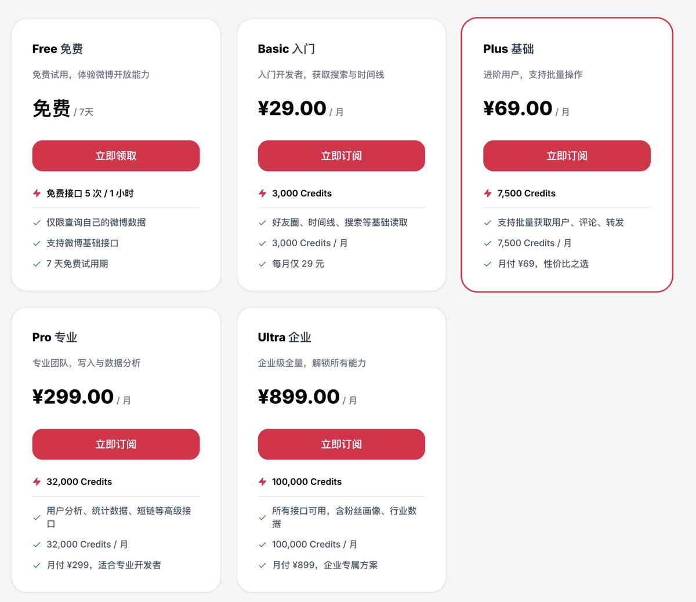

洛铃🦊Magic Caster
@LolingVerse
@luoleiorg 话说能不能有什么办法把广告喂给agent via cli

luolei
@luoleiorg
新浪微博官方上线了 CLI，从免费试用到 ¥899/月，按 Credits 分多档订阅。
方向挺有意思。CLI 本质上是绕开自家广告信息流的一个入口，等于动了眼下赚钱的饭碗——能把它做出来，说明团队里还是有人愿意往前试，内部阻力想必不小。 https://t.co/zl5KFsdkVa